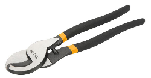

Corta Cable
Es una herramienta manual o eléctrica utilizada para cortar cables de red. Estos cables se utilizan para conectar computadoras, dispositivos y otros equipos a una red. Los cortacables de red suelen ser más pequeños y livianos que los cortacables generales, ya que los cables de red son más delgados.
